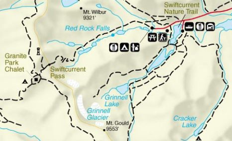

Cracker Lake is a 12.0-mile-in-out-and-back trail near Siyeh Bend, Montana. It is considered a moderately challenging route, it takes an average of 5 hours and 9 minutes to complete!

This trail features outstanding views of the Alpine lake. It 12.6 miles roundtrip! The first few miles of the hike passes through a thick forest. You will approach many canopys along this trail that will provide you with outstanding veiws!